Стратегия совместной работы Комитета по физической культуре и спорту Санкт-Петербурга и Клуба технологического лидерства. Масштаб — город.
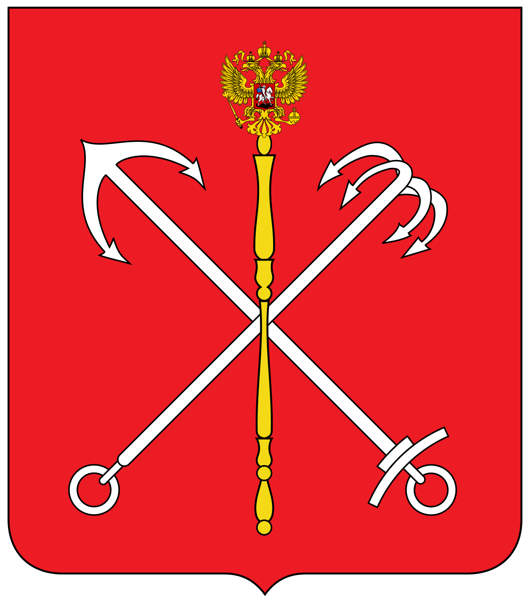
Комитет по физической культуре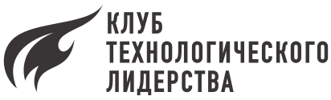
Национальная цель — доля систематически занимающихся ФКиС ≈ 70% к 2030 г. (ГП-498 СПб, ред. 02.06.2026; Указ Президента РФ № 309).
Потоки задач работают на вовлечение граждан в занятия физкультурой и спортом, повышение уровня здоровья и спортивных результатов, развитие городской среды. Инфраструктура создаёт предложение, вовлечение формирует спрос.
Перевести развитие инфраструктуры на доказательное, пространственно обоснованное и долгосрочное планирование. Прозрачный инвестпроцесс → инвесторы, партнёры, управляемые долгосрочные показатели.
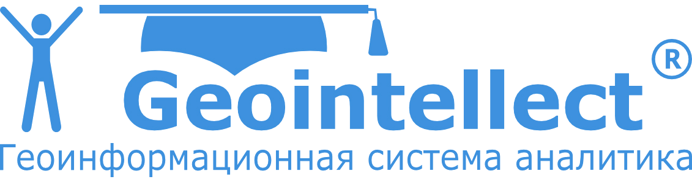
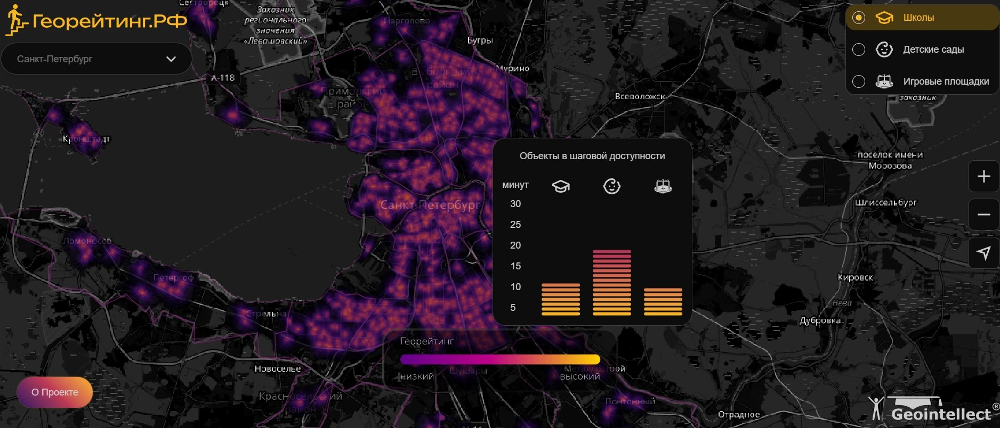
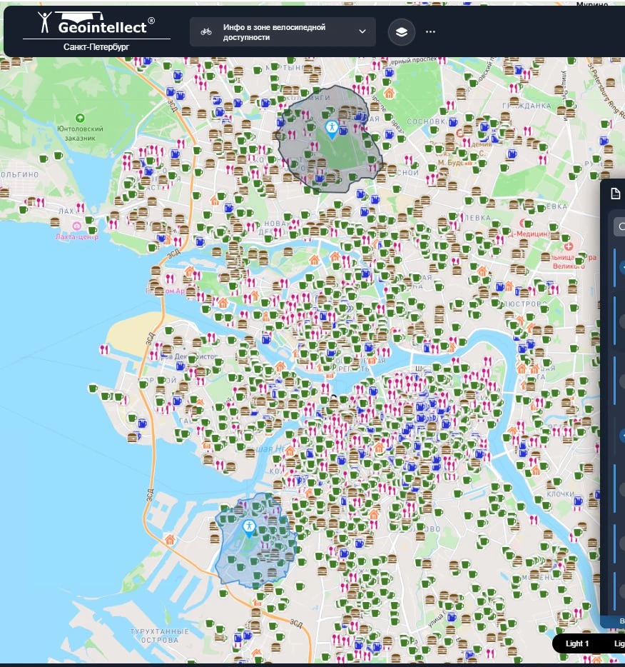
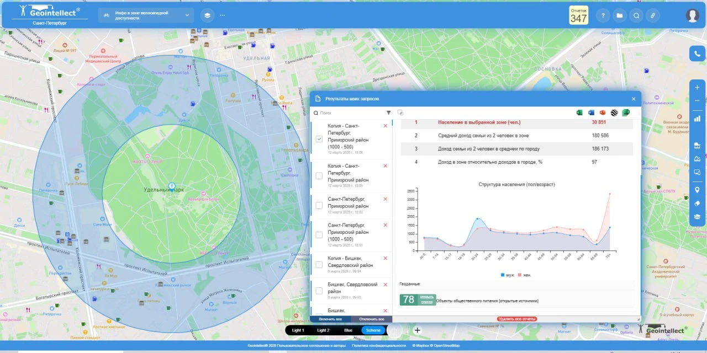
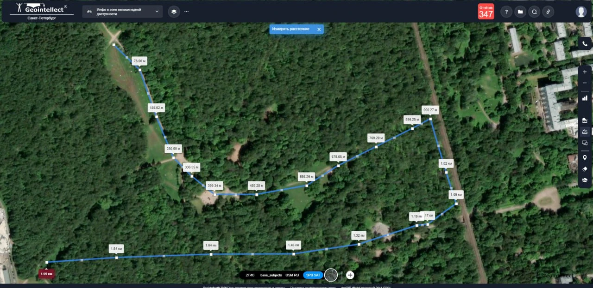
Единая система управления «инфраструктура / событие → канал → житель → обратная связь» — от верхних показателей до локальных событий и активов. Коммуникация становится частью планирования, а не рассылкой постфактум.
Мы не пытаемся полностью контролировать каналы коммуникации — мы формируем информационную среду
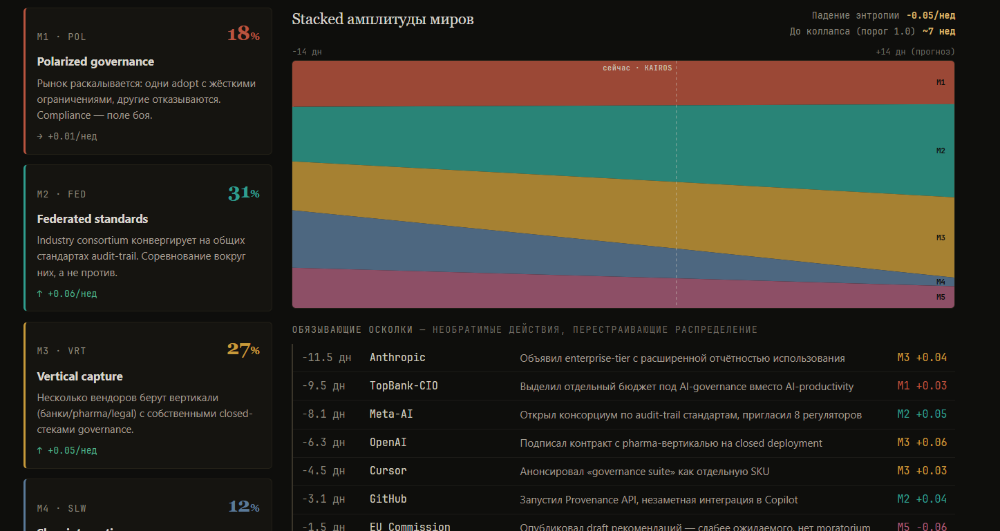
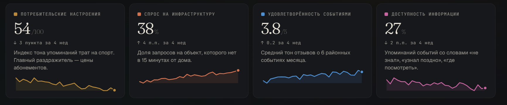
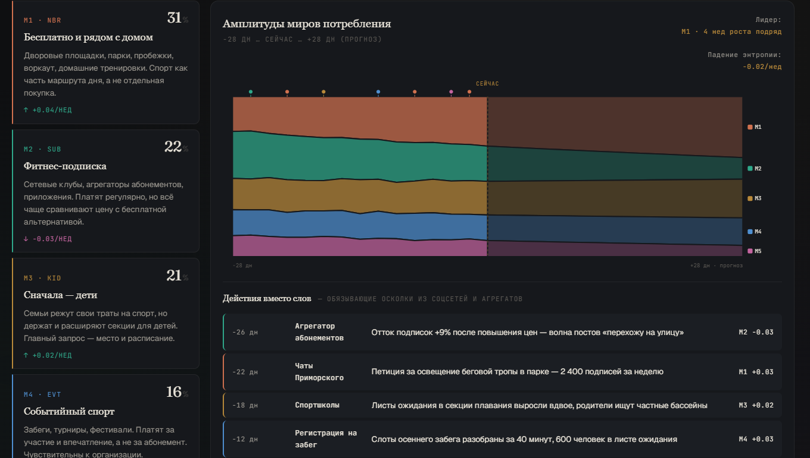
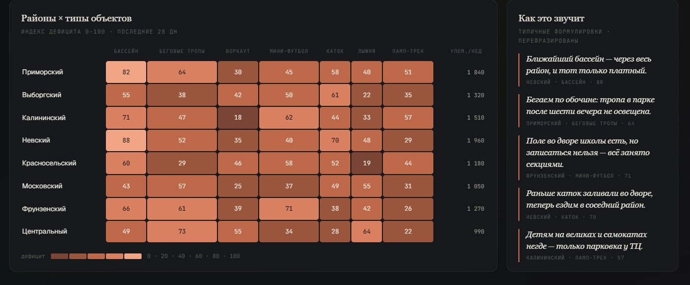
Прототип дашборда ИИ-мониторинга соцсетей: настроения, спрос на инфраструктуру, дефицит по районам. Данные на скриншотах иллюстративные.
Реализация целей Межведомственной комиссии по вопросам создания, развития и внедрения технологий искусственного интеллекта (ИИ) в Санкт‑Петербурге. Внедрение ИИ в КСиФК
Планируется использовать как платформу для доступа к ИИ и для создания инструментов Комитета.
ИИ для поддержки планирования и поиска спортивной инфраструктуры
ИИ для медиамониторинга и управления информационной повесткой
Обучение команды лидеров Комитета, которые реализуют общую стратегию
Мастерская ведёт задачи как воркстримы — устойчивые темы, к которым каждый семестр подключается студенческая команда. Семестр = один ход, размеченный контрольными точками (гейтами) G0→G5.
Площадка — место для коммуникации и формирования новых долгосрочных моделей развития спорта в Санкт‑Петербурге.
| Направление | Ответственный / партнёр | Бюджет | Срок | |
|---|---|---|---|---|
| 01 | Обучение + вовлечение Ядро команды, архитектура решения, совместное проектирование и разработка, запуск семантической спортивной платформы, интенсив по ИИ и задачам (1–2 дня), поддержка (2–4 встречи) |
АКТЛ | 2 000 000 ₽ | Октябрьинтенсив и архитектура решенияДо конца годаподдержка и внедрение |
| 02 | Тепловые карты Геоинформационные системы и модель развития спортивной инфраструктуры |
Геоинтеллект | 2 900 000 ₽ SaaSлибо 5 300 000 ₽ собственная платформа | До конца года |
| 03 | Искусственный интеллект Платформа и ключевые инструменты |
Veai | 600 000 ₽ доступ к платформе | До конца года |
| 04 | Мастерская Экономического факультета Долгосрочные модели, студенческие команды, подготовка будущих проектов |
Экономический факультет СПбГУ | — | До конца годазапуск инициативы и первые команды |